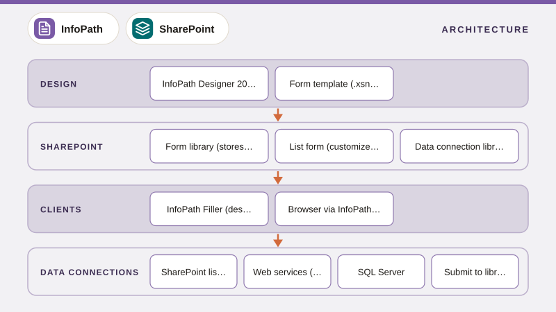

01
What is InfoPath? Architecture, Form Types and Why It Mattered (2003–2026)
InfoPath explained for people who inherit it, covering InfoPath Designer and Filler, XML-based form templates (XSN), browser forms via InfoPath Forms Services, list forms vs form libraries, how data is stored, and its retirement timeline.